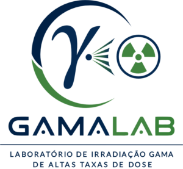

Laboratório de Dosimetria Retrospectiva e Datação
Datação por TL, OSL e EPR, dosimetria retrospectiva e caracterização de materiais arqueométricos, geológicos e geomorfológicos.
Uso multiusuárioCentro Integrado de Dosimetria e Instrumentação Nuclear. Infraestrutura multiusuária de pesquisa do GDOIN.
O Centro Integrado de Dosimetria e Instrumentação Nuclear (CIDIN), vinculado ao Departamento de Energia Nuclear (DEN) da Universidade Federal de Pernambuco (UFPE), reúne infraestruturas laboratoriais, equipamentos e competências científicas destinados ao desenvolvimento de pesquisas, à inovação tecnológica e à formação de recursos humanos nas áreas de dosimetria, instrumentação nuclear, aplicações das radiações ionizantes e caracterização de materiais.
Constituído como uma infraestrutura integrada de pesquisa multiusuária, o CIDIN reúne o Laboratório de Irradiação Gama de Altas Taxas de Dose (GAMALAB), o Laboratório de Dosimetria Retrospectiva e Datação (LDRD) e o LPN, articulando diferentes técnicas, equipamentos e especialidades para apoiar projetos de pesquisa e desenvolvimento científico e tecnológico.
Suas atividades abrangem experimentos de irradiação gama, dosimetria retrospectiva, datação por termoluminescência (TL) e luminescência opticamente estimulada (OSL), caracterização de materiais e outras aplicações relacionadas às radiações ionizantes. Essas competências contribuem para investigações em áreas como ciência dos materiais, arqueometria, geologia, patrimônio cultural, saúde e aplicações industriais e ambientais.
A atuação integrada dos laboratórios busca otimizar o uso compartilhado da infraestrutura, ampliar a cooperação entre pesquisadores e instituições e favorecer o desenvolvimento de projetos interdisciplinares. O acesso aos equipamentos e às instalações é realizado conforme os procedimentos de solicitação, autorização, agendamento e segurança estabelecidos para cada laboratório.
O CIDIN tem como propósito fortalecer a capacidade científica e tecnológica da UFPE, promovendo o uso eficiente e seguro de sua infraestrutura, a colaboração interinstitucional e a produção de conhecimento por meio da pesquisa, do desenvolvimento metodológico e da formação de recursos humanos.
Laboratório de Dosimetria Retrospectiva e Datação
Datação por TL, OSL e EPR, dosimetria retrospectiva e caracterização de materiais arqueométricos, geológicos e geomorfológicos.
Uso multiusuárioPesquisa multiusuária
Infraestrutura de pesquisa compartilhada do CIDIN.
Uso multiusuário
Laboratório de Irradiação Gama de Altas Taxas de Dose
Irradiação gama para pesquisas em ciência dos materiais, nanotecnologia, farmacologia e ciências biológicas e da saúde.
Uso multiusuário